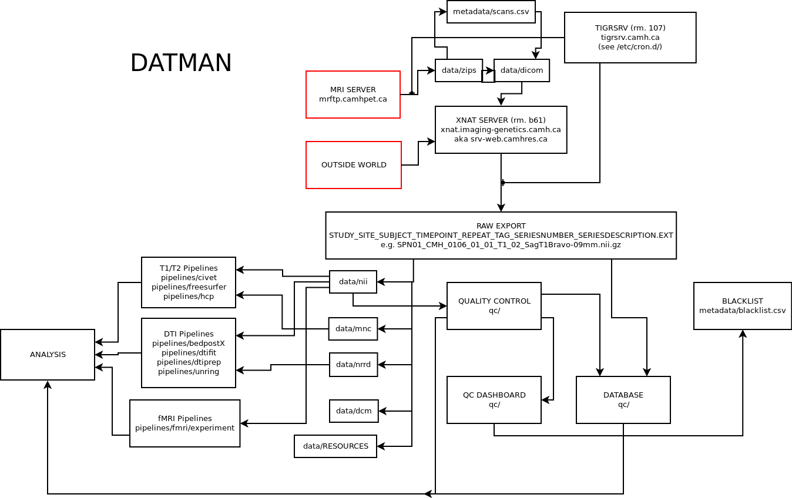

Datman is a set of python scripts used for three major functions:
Managing data in our XNAT database
Quality control of this data
Running this data through the myriad of analytic pipelines that exist today.
links
Introduction
definitions
Exam/Scan: A series of MRI acquisitions completed in one sitting.
Series/Acquisition: A single image of a subject in one modality
Exam archive: The raw data taken during an exam. For MRI, this could be a folder structure of DICOM images, or a tarball/zipfile of that same data,
Type tag: A short, keyword that distinguishes a kind of acquisition from other kinds in a study. For instance, T1, DTI, REST. These type tags are used in the file naming and follow-on processing scripts to identify acquisitions without having to parse their headers/description/etc…
dependencies
scipy stack for general analysis.
NiBabel for NIFTI reading/writing.
qcmon for running QC metrics.
setup
Datman requires that each project in XNAT’s Define Prearchive Settings under Manage be set to ‘All image data will be placed into the archive automatically and will overwrite existing files. Data which doesn’t match a pre-existing project will be placed in an ‘Unassigned’ project.’
To setup the datman python package:
git clone https://github.com/tigrlab/datman
cd datman
conda env create && . activate datman-env # only if you are using anaconda
python setup.py install
Your environment needs to be set up as so:
Set DATMAN_ASSETS to point to datman/assets.
Add datman/assets to your PYTHONPATH`and MATLABPATH.
Datman Overview
Quality Control
Datman runs a standard QC pipeline on all major datatypes. It largely does this using the qcmon project.
We QC the data at two levels: single subject, and chronologically. When QCing a single subject, we’re looking for major artifacts in the data, or problems with the subject (tumors, strokes, etc). When we are QCing chronologically, we’re looking for things in one subject that look rather different from all of the others (or most of the others). This is a good practice when you don’t know of a good ‘cut-off’. For example, no one know what SNR number is so low that the data becomes corrupted.
The report generator also runs all of the QC metrics on our data. These files are placed (for each subject) in:
/archive/data/${project}/qc/${subject}
A single-subject report will be generated here:
/archive/data/${project}/qc/${subject}/qc_${subject}.html
All other files are used for chronological analysis. They will have a ‘prefix’ being the nifti file it was generated from. So SPN01_ZHH_0018_01_01_RST_06_Resting-State-212_spectra.csv is the spectra of SPN01_ZHH_0018_01_01_RST_06_Resting-State-212.nii.gz
human fmri metrics
${prefix}_stats.csvmean_fd: average framewise displacement (instantaneous head motion) across the whole run.
n_bad_fd: number of FD measures above 0.2 mm.
%_bad_fd: % of the run that are ‘bad’ FD measures.
global_corr: takes the average of the average correlation of each voxel with the rest of the brain.
mean_sfnr: average signal fluctuation to noise ratio measure across the brain.
${prefix}_spectra.csv: average and standard deviation of the BOLD timeseries spectra across the brain.${prefix}_scanlength.csv: number of TRs in the obtained scan.${prefix}_qascripts_bold.csv: a collection of QA measures from the qascripts packagetsnr: temporal signal to noise ratio
gmean: global mean intensity
drift: linear drift of signal over time
driftpercent: ?
outmax / outmin / outcount: outlier measuresments
meanABSrms, meanRELrms, maxABSrms, maxRELrms: average/maximum, absolute/relative root-mean-square of ? calculated during head motion correction.
${prefix}_fd.csv: framewise displacement vector (instantaneous head motion, per TR).${prefix}_corr.nii.gz: per-voxel correlation of each voxel with the rest of the brain.${prefix}_sfnr.nii.gz: per-voxel signal fluctuation to noise ratio.
human dti metrics
${prefix}_stats.csv:ndirs: number of encoding directions
nb0s: number of b0 images
${prefix}_qascripts_dti.csv:tsnr_bX: temporal signal to noise ratio of the encoding directions
gmean_bX: global mean of the encoding directions
drift_bX: drift of the encoding directions
driftpercent: ?
outmax_bX / outmean_bX / outcount_bX: outlier measuresments
meanABSrms, meanRELrms, maxABSrms, maxRELrms: average/maximum, absolute/relative root-mean-square of ? calculated during head motion correction.
phantom ADNI metrics
This tracks the T1 weighted value across the 5 primary ROIs in the ADNI phantom, and the T1 ratios between each of the higher ones with the lowest one. For more information, please see http://www.phantomlab.com/library/pdf/magphan_adni_manual.pdf.
mean s1, s2, s3, s4, s5
intensitiy ratios: s2/s1, s3/s1, s4/s1, s5/s1
phantom fBIRN fMRI
This uses the fBIRN pipeline to define % signal fluctuation, linear drift, signal to noise ratio, signal-to-fluctuation noise ratio, and radius of decorrelation. For more information, please see [1], http://www.ncbi.nlm.nih.gov/pubmed/16649196.
phantom fBRIN DTI
A pipeline designed by Sofia Chavez to assess the performance of DTI protocols.
further reading
> [1] Spurious but systematic correlations in functional connectivity MRI networks arise from subject motion. Jonathan D. Power et al. 2011. Neuroimage 59:3. > [2] Report on a multicenter fMRI quality assurance protocol. Friedman L et al. 2006. J Magn Reson Imaging 23(6).